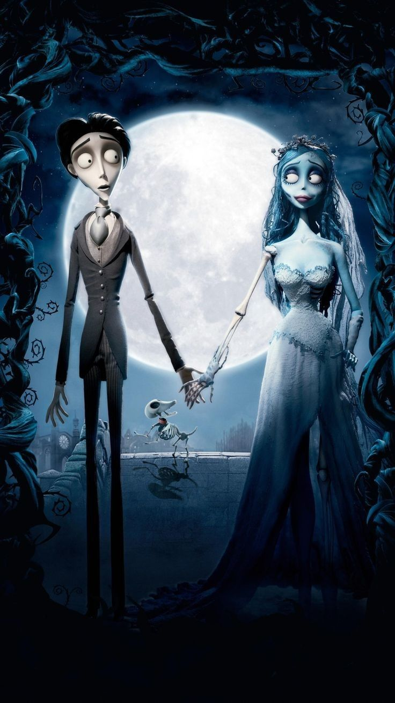

Ficha

Duración: 77 minutos
Dirección: Tim Burton y Mike Johnson
Guion: John August, Caroline Thompson y Pamela Pettler
Producción: Tim Burton y Allison Abbate
Género: Stop motion · Fantasía · Musical · Romance · Gótico
Música: Danny Elfman
¿De que se trata?
Victor Van Dort es un joven tímido que está a punto de casarse con Victoria Everglot, en un matrimonio organizado por sus familias.
Mientras practica sus votos en un bosque, Victor coloca accidentalmente el anillo de compromiso en el dedo de Emily, una mujer que resulta ser una novia muerta. Emily se levanta de su tumba convencida de que Victor acaba de casarse con ella.
Victor queda atrapado entre dos mundos: el de los vivos, donde lo espera Victoria, y el de los muertos, donde Emily comienza a mostrarle una realidad mucho más colorida, libre y llena de vida de lo que esperaba.
Entre romance, humor y oscuridad, la historia explora el amor, la libertad y la diferencia entre las apariencias y lo que realmente significa estar vivo.
Personajes
VICTOR VAN DORT
Un joven nervioso y sensible que se encuentra atrapado entre el mundo de los vivos y el de los muertos.
EMILY
La Novia Cadáver. Es una mujer muerta que espera encontrar el amor que perdió en vida.
VICTORIA EVERGLOT
La joven con quien Victor debía casarse. A pesar de pertenecer a una familia rígida y tradicional, comparte con Victor una personalidad sensible.
LORD BARKIS
Un hombre elegante y aparentemente encantador que esconde intenciones mucho más oscuras.
Reparto y Equipo
Dirección: Tim Burton y Mike Johnson
Guion: John August, Caroline Thompson y Pamela Pettler
Producción: Tim Burton y Allison Abbate
Diseño de producción: Alex McDowell
Música: Danny Elfman
Voces principales:
Johnny Depp — Victor Van Dort
Helena Bonham Carter — Emily
Emily Watson — Victoria Everglot
Richard E. Grant — Lord Barkis
Albert Finney — Finnis Everglot
Joanna Lumley — Maudeline Everglot
Detras de cámara
Los personajes fueron construidos como marionetas articuladas con estructuras internas que permitían controlar sus movimientos. Los modelos principales incorporaban mecanismos dentro de sus cabezas para modificar expresiones faciales con gran precisión.
Una de las grandes innovaciones de la película fue su sistema de captura digital. En lugar de utilizar cámaras cinematográficas tradicionales, la producción utilizó cámaras fotográficas digitales Canon EOS-1D Mark II adaptadas especialmente para el stop motion.
La película fue rodada durante aproximadamente 55 semanas y contó con numerosos sets y equipos de animadores trabajando simultáneamente.
Datos Curiosos
01 — UNA NOVIA MECÁNICA
Los rostros de los personajes principales utilizaban pequeños mecanismos internos que permitían modificar ojos, cejas y boca.
02 — TODO FUE FOTOGRAFIADO
Aunque incorporó efectos digitales, gran parte de la película fue creada mediante marionetas y escenarios físicos.
03 — LA PRIMERA GRAN PRODUCCIÓN DIGITAL
Fue una de las primeras películas de animación stop motion en utilizar cámaras fotográficas digitales como parte central de su proceso de captura.
04 — LOS DOS MUNDOS
El mundo de los vivos está dominado por colores apagados y una atmósfera rígida, mientras que el mundo de los muertos resulta mucho más colorido y dinámico.
05 — LOS MUERTOS TIENEN MÁS VIDA
Una de las ideas visuales más interesantes de la película es justamente la inversión de roles: los muertos parecen disfrutar de la vida mucho más que los personajes vivos.
Universo Visual
PALETA
Azules, grises, negros, blancos y verdes, con acentos cálidos.
ESTÉTICA
Gótica, romántica, teatral y expresionista.
PERSONAJES
Cuerpos estilizados, ojos grandes, extremidades largas y rasgos exagerados.
ESCENARIOS
Bosques, cementerios, pueblos victorianos y un colorido mundo de los muertos.
ILUMINACIÓN
Contrastes entre ambientes fríos y luminosos espacios del mundo de los muertos.
REFERENCIAS
Cuentos góticos · Era victoriana · Romanticismo oscuro · Teatro · Terror clásico.